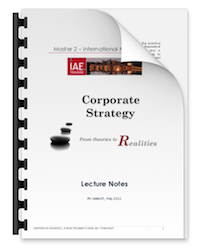

Practitioner’s Perspective
on Strategy
This site contains training material for Master’s level courses at the Graduate School of Management from Toulouse University.
Purpose
The course was created in 2009 and was initially dedicated to very practical aspects. However, I quickly observed that most students (as well as many managers):
are generally quite familiar with the jargon of strategic management, without always fully understanding the underlying concepts,
often prefer qualitative approaches and struggle more with quantitative aspects,
are looking for ‘ready-to-use’ recipes and expect to find some sort of ‘automated strategizing process’.

In 2013, I released an expanded version, known by several cohorts of students as “the booklet”, that included definitions for the key notions (even those that are deemed known). It provided some insight about business economics and corporate finance, and last but not least, introduced the fundamentals of corporate development.
Over the years, more and more content have been added (while I also stopped using some others). The booklet became a website in 2018. If I may paraphrase P. Drucker ( [Druker85] ) this site seeks to equip the reader with (some of) “the understanding, the thinking, the knowledge and the skills for strategy formulation”.
However, this site is neither a textbook nor is intended to replace one. Students interested in the field of strategic management and/or are planning to pursue a career in strategy/consulting are invited to consider these lines as a starting point for a broader journey. The bibliography contains some very good entry points for further reading.

Please note as well that the views expressed herein are those of the author. They have not been endorsed by TSM or the University of Toulouse and do not necessarily reflect their opinions.
About this Pages
Strategic Management is now a well-established academic discipline that encompasses fast-growing literature and a considerable number of widely acclaimed models to elaborate strategies. However, the daily practice of strategic management sometimes deviates from theoretical prescriptions.
Several factors may explain these deviations (or even distortions): difficulties in implementing theoretical frameworks, lack of knowledge from practitioners, or even sometimes the mere conviction that theoretical models are of little interest.
The class must be seen as a Practitioner’s View on strategy. It aims at giving some insight into how to formulate, articulate, and implement strategies in firms. This will also be the occasion to reflect on the role of strategists in firms and/or consultancies.
Neither the class nor these notes are trying to be comprehensive and many aspects will not be covered. However, this Blog will meet its objectives if it makes you think about some of the many issues of strategy elaboration, perhaps brings you to question the standard solutions and above all, invites you to seek your answers.
Why This Blog-let?
Designing suitable slides is always a dilemma ( [Duarte] ) . Slides can be made self-sufficient and self-readable, but if so, what is the point of presenting them? By contrast, one can prepare more visual, possibly more enjoyable, slides that focus on the most salient points but are of little use without additional explanations and can barely be referred to, outside the class.
My preferred solution to escape this dilemma is to have both slides for the class and additional lecture notes (usually covering more aspects that can be discussed during the class). Students can then decide to revise some of the notions after the class.
It is primarily about ‘Thinking’
De Wit & Meyer ( [deWit10] ) stress that, in what they call Instructional Teaching, students are exposed to a clear body of knowledge and trained to apply established procedures. This typically results in ‘tool-oriented’ classes where the priority is on accepting, absorbing & applying.
By contrast, a ‘decision-oriented’ approach seeks to stimulate critical thinking, by exploring the various theories, challenging their limits & pitfalls, and encouraging students to derive their proper models.
Strategic thinking is in its very essence questioning, challenging unconventional and innovative — B. De Wit and R. Meyer.
Rather than trying to offer miracle recipes, the following pages seek to arouse curiosity and stimulate the reader’s critical mind. They present the main elements of standard theories but also seeks to establish links between the different points of view and techniques. It may seem less exciting and more tedious, but the goal is to develop independent thinking and allow students to form their own opinion.
Copyright
Strictly speaking, I am the author of these pages, as I wrote them. However, I borrowed many aspects from various books and articles (including verbatims). Therefore I can also be seen as the curator or assembler of existing texts.
Indeed, this site aims at sharing my personal experience and thoughts as well as providing students with reference elements & materials that I have found useful as a practitioner.
Credits
The site draws from my readings and hands-on experience over the years.
I normally stress very clearly in the text when I refer to existing materials or quote scholars and I give credit when credit is due. However, and despite the efforts, I may have unwillingly missed some references and/or forgotten some sources. Should you detect such an omission, please let me know and I will happily remediate.
License
This is licensed under Creative Common, for non-commercial, no derivatives, Version 4.0 (the âLicenseâ); you may not use this file except in compliance with the License. You can copy and redistribute the material, providing that you give appropriate credit and indicate if changes were made. You may not use the material for any commercial purpose.
Caveat
NO WARRANTIES OR CONDITIONS OF ANY KIND, either express or implied, is given.